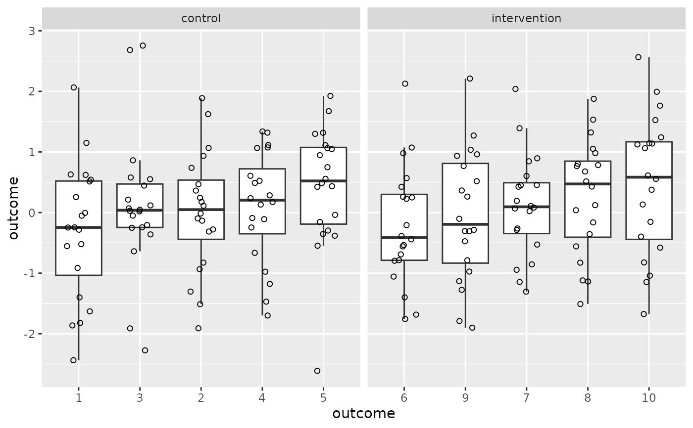
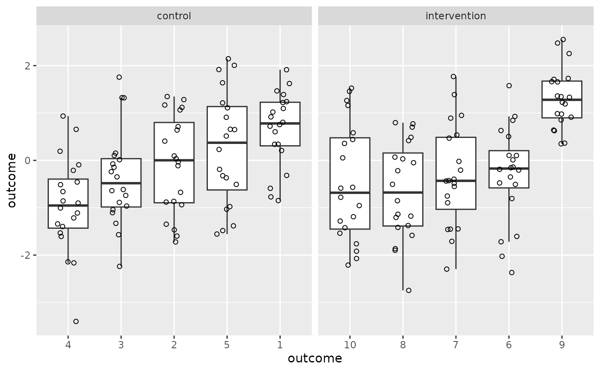
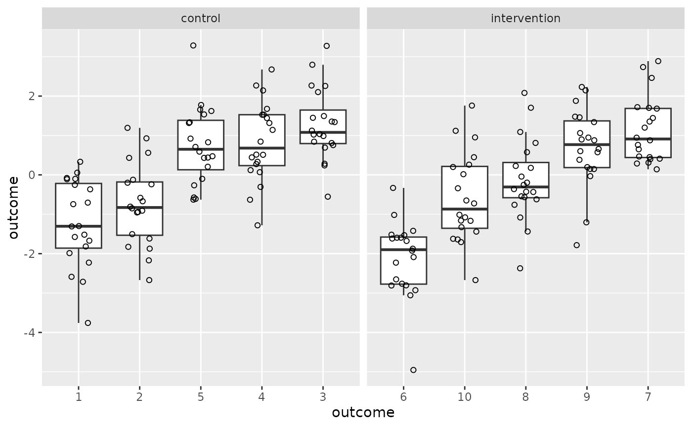
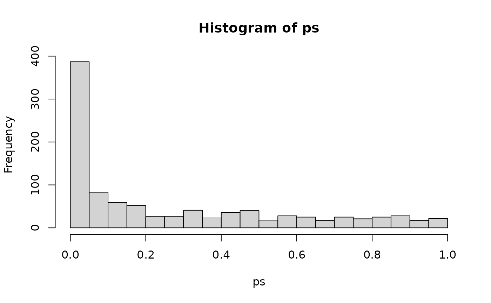

Simulate data for a cluster-randomised experiment
clustered_data.RdIn educational settings, it's often impossible to randomly assign each individual students to one of an experiment's conditions. Instead, all students in the same class or school are assigned to the same condition. This type of random assignment is known as cluster randomisation. Importantly, if you analyse the data from a cluster-randomised experiment as though the participants were assigned randomly on an individual basis (e.g., using a t-test on the individual outcomes), your Type-I error rate (false positive) goes through the roof. To illustrate this, this function simulates data from a cluster-randomised experiment. Covariate scores related to the outcome (referred to as pretest scores here) can also be generated.
Usage
clustered_data(
n_per_class = rep(20, 10),
ICC = 0.15,
effect = 0,
rho_prepost = NULL,
reliability_post = 1,
reliability_pre = NULL
)Arguments
- n_per_class
The number of participants per class. The first half of the classes are assigned to the control condition, the second half to the intervention condition.
- ICC
The intra-class correlation. An ICC of 1 means that the observations in each class are identical to each other; an ICC of 0 means that observations within the same class aren't any more alike than observations from different classes. Defaults to 0.15.
- effect
The population-level effect of the intervention. Defaults to 0.
- rho_prepost
The desired population-level correlation between the measured pretest scores and outcomes.
- reliability_post
The reliability of the outcomes. Default to 1, meaning there is no measured error on the outcome.
- reliability_pre
The reliability of the pretest scores.
Details
This function works as follows. The within-cluster variance for the participants' latent pre-intervention skill is set to 1. The within-cluster variance is then computed on the basis of the desired ICC. Then, pre- and posttest measurements are generated by adding random normal measurement error to the participants' latent pre-intervention skill. The variance of the measurement error is computed on the basis of the desired correlation between the pretest and pre-intervention outcome scores; in this case, the reliabilities of the pretest and outcome scores are set to be equal. If no correlation is specified, the measurement error is computed on the basis of the desired pretest and posttest reliabilities. Finally, a constant intervention effect is added to the outcome scores of the participants in the intervention condition.
Note that the square root of the product of the pre- and posttest reliabilities yields
the correlation between them. So if you want to have a correlation between pretest and posttest
scores (without an intervention effect) of 0.7 and you want your pretest to be correlated
at 0.9 to the pre-intervention latent skill levels (i.e., have a reliability of 0.9),
then solve \eqn{\sqrt{0.9x} = 0.7} for \eqn{x} (\eqn{x = 0.7^2/0.9 = 0.544}).References
Vanhove, Jan. 2015. Analyzing randomized controlled interventions: Three notes for applied linguists. Studies in Second Language Learning and Teaching 5(1). 135-152. http://doi.org/10.14746/ssllt.2015.5.1.7. (Correction note: http://pressto.amu.edu.pl/index.php/ssllt/article/view/5827/5895.)
Examples
# Generate and plot data with ICC = 0
d <- clustered_data(ICC = 0)
library(tidyverse)
#> ── Attaching core tidyverse packages ──────────────────────── tidyverse 2.0.0 ──
#> ✔ dplyr 1.2.1 ✔ readr 2.2.0
#> ✔ forcats 1.0.1 ✔ stringr 1.6.0
#> ✔ ggplot2 4.0.3 ✔ tibble 3.3.1
#> ✔ lubridate 1.9.5 ✔ tidyr 1.3.2
#> ✔ purrr 1.2.2
#> ── Conflicts ────────────────────────────────────────── tidyverse_conflicts() ──
#> ✖ dplyr::filter() masks stats::filter()
#> ✖ dplyr::lag() masks stats::lag()
#> ℹ Use the conflicted package (<http://conflicted.r-lib.org/>) to force all conflicts to become errors
ggplot(data = d,
aes(x = reorder(class, outcome, FUN = median),
y = outcome)) +
geom_boxplot(outlier.shape = NA) +
geom_point(shape = 1,
position = position_jitter(width = 0.2)) +
facet_wrap(~ condition, scales = "free_x") +
xlab("outcome")

# Generate and plot data with ICC = 0.2
d <- clustered_data(ICC = 0.2)
ggplot(data = d,
aes(x = reorder(class, outcome, FUN = median),
y = outcome)) +
geom_boxplot(outlier.shape = NA) +
geom_point(shape = 1,
position = position_jitter(width = 0.2)) +
facet_wrap(~ condition, scales = "free_x") +
xlab("outcome")

# Generate and plot data with ICC = 0.6
d <- clustered_data(ICC = 0.6)
ggplot(data = d,
aes(x = reorder(class, outcome, FUN = median),
y = outcome)) +
geom_boxplot(outlier.shape = NA) +
geom_point(shape = 1,
position = position_jitter(width = 0.2)) +
facet_wrap(~ condition, scales = "free_x") +
xlab("outcome")

# Simulate 1000 datasets and analyse them using t-test
ps <- replicate(1000,
{
d <- clustered_data(ICC = 0.2)
t.test(outcome ~ condition, data = d)$p.value
})
hist(ps, breaks = seq(0, 1, 0.05))

mean(ps < 0.05)
#> [1] 0.387
# Note the hugely inflated Type-I error rate!
# Generate pretest scores with correlation 0.7 to outcome
# and with ICC of latent pre-intervention skill of 0.4
d <- clustered_data(ICC = 0.4, rho_prepost = 0.7)
#> 'rho_prepost' was set, so the 'reliability_pre' and 'reliability_post' were ignored, and both were set to the 'rho_prepost' value.
with(d, cor(pretest, outcome))
#> [1] 0.6804858
# ICC = 0.2, pretest reliability = 0.9, posttest reliability = 0.544
# and hence correlation = sqrt(0.9*0.544) =~ 0.7:
d <- clustered_data(ICC = 0.2, reliability_pre = 0.9, reliability_post = 0.544)
with(d, cor(pretest, outcome))
#> [1] 0.6990089